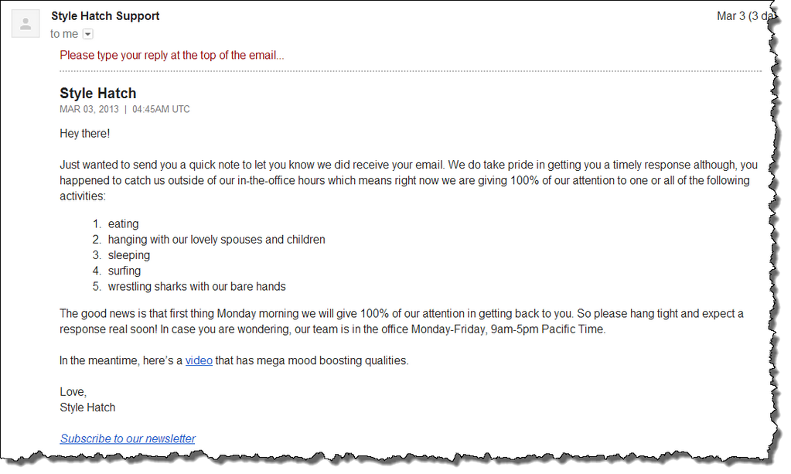

Don’t you just hate it when you urgently shoot an email to tech support - who guarantee they will get back to you asap - only to find that the guarantee of them getting back to “asap” you is via an automated confirmation email of having received your call for help. In such instances, we tend to forget that tech support are people too and that they need to go back home :D or just wish that they simply had someone “human” on call 24/7.
Well I wasn’t in such a dire situation with my call for help to Style Hatch. But my support request was emailed over the weekend and I obviously did not expect to get any help until the next day. But as expected, I received the above automated confirmation email. And reading the content of it just made me smile. A simple “automated” email had so much of “human touch” to it. It’s a rather small thing but I loved it that Style Hatch put so much care to add a word of reassurance that they will indeed get back to help me! Having read that email, I would have forgiven Style Hatch even if they weren’t able to get back to me because they had to continue ”fighting the sharks with their bare hands”.
Good design goes well beyond the pixels and typefaces all the way down to the small interactions that a customer has with your company. Now I better get back to wrestling sharks…